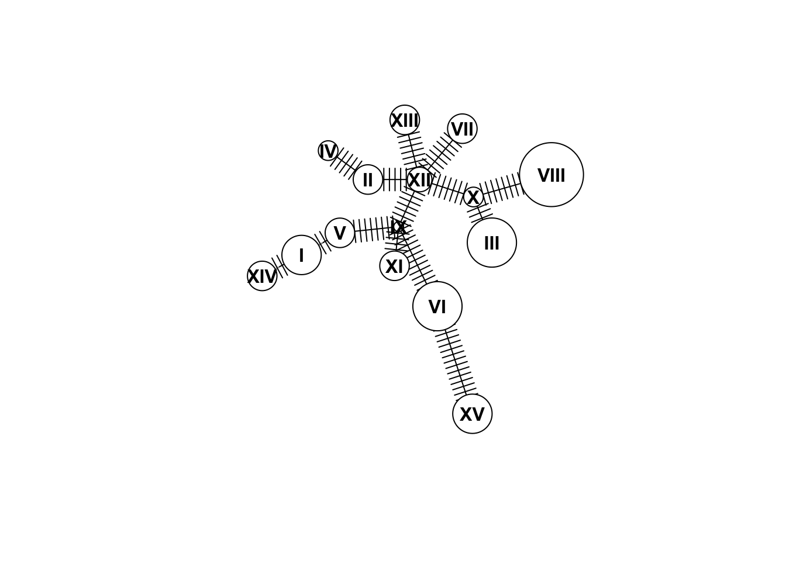

Week 5 Haplotype networks
5.1 Indexing
Today we’ll use the “Arthritis” dataset from the vcd package to learn some functions. Let’s install it:
install.packages("vcd")library(vcd)
data(Arthritis)
?Arthritis
head(Arthritis)## ID Treatment Sex Age Improved
## 1 57 Treated Male 27 Some
## 2 46 Treated Male 29 None
## 3 77 Treated Male 30 None
## 4 17 Treated Male 32 Marked
## 5 36 Treated Male 46 Marked
## 6 23 Treated Male 58 Marked
R and other programing languages use “indexing” to subset data. Indexing uses the order of entries (for example values in a vector or rows in a dataframe) to isolate particular entries. We’ve already used indexing to subset, maybe without even knowing it. For example, we know the command below gives us the first through fourth rows and the first through third columns. The numbers inside the brackes are called “indexes.”
Arthritis[1:4,1:3]## ID Treatment Sex
## 1 57 Treated Male
## 2 46 Treated Male
## 3 77 Treated Male
## 4 17 Treated Male
We can also use indexing to subet by a certain criteria. The command which returns indexes for all entries that meet a certain criteria. We saw a similar effect last week when we used which.max, but which is a more general command:
ind <- which(Arthritis$Sex=="Male")
ind## [1] 1 2 3 4 5 6 7 8 9 10 11 12 13 14 42 43 44 45 46 47 48 49 50 51 52This gives us the indexes of the rows in the Arthritis data frame where the patient was male. If we want to retrieve these rows, we can use that vector to pull out those rows:
Arthritis[ind,]## ID Treatment Sex Age Improved
## 1 57 Treated Male 27 Some
## 2 46 Treated Male 29 None
## 3 77 Treated Male 30 None
## 4 17 Treated Male 32 Marked
## 5 36 Treated Male 46 Marked
## 6 23 Treated Male 58 Marked
## 7 75 Treated Male 59 None
## 8 39 Treated Male 59 Marked
## 9 33 Treated Male 63 None
## 10 55 Treated Male 63 None
## 11 30 Treated Male 64 None
## 12 5 Treated Male 64 Some
## 13 63 Treated Male 69 None
## 14 83 Treated Male 70 Marked
## 42 9 Placebo Male 37 None
## 43 14 Placebo Male 44 None
## 44 73 Placebo Male 50 None
## 45 74 Placebo Male 51 None
## 46 25 Placebo Male 52 None
## 47 18 Placebo Male 53 None
## 48 21 Placebo Male 59 None
## 49 52 Placebo Male 59 None
## 50 45 Placebo Male 62 None
## 51 41 Placebo Male 62 None
## 52 8 Placebo Male 63 MarkedNote that we could have just as easily done this:
Arthritis[Arthritis$Sex=="Male",]When you do a command like this R finds the indexes and returns the rows for you, without you having to think about indexes. However, it can still be useful to know how indexes work, as we will see in the section today.
5.2 Using table to count across multiple columns
Previously we used the table function to count the number of times each value was observed in a specific column. Today we’ll use the same function to create a matrix of counts across two different variables. First let’s get some data. Install the package vcd, load the library and pull up the Arthritis dataset:
Notice that several of the columns are categorical. That means we can count how many times a certain category shows up.
Before, we made a table with just one column, like this:
table(Arthritis$Improved)##
## None Some Marked
## 42 14 28But what if we want to sort by another factor simultaneously. For example, we can see improvement based on treatment:
table(Arthritis$Treatment,Arthritis$Improved)##
## None Some Marked
## Placebo 29 7 7
## Treated 13 7 21
5.3 Creating a haplotype network
Today we will use mtDNA sequences from an example dataset to learn to create a haplotype network. The package we will use is called pegas. Install this package and load the library.
install.packages("pegas")library(pegas)We will take advantage of a dataset called woodmouse that is part of the pegas package:
data(woodmouse)
woodmouse## 15 DNA sequences in binary format stored in a matrix.
##
## All sequences of same length: 965
##
## Labels:
## No305
## No304
## No306
## No0906S
## No0908S
## No0909S
## ...
##
## Base composition:
## a c g t
## 0.307 0.261 0.126 0.306
## (Total: 14.47 kb)Notice that woodmouse only has 15 individuals. We want to work with a few more, so we will artificially expand the dataset. We can do this by sampling with replacement using the command sample. Here we create a vector of the numbers 1:15, randomly sampled 100 times. We use that to choose individuals to sample (some multiple times) from the woodmouse dataset:
data <- woodmouse[sample(1:15,size=100,replace=T),]
data## 100 DNA sequences in binary format stored in a matrix.
##
## All sequences of same length: 965
##
## Labels:
## No1208S
## No304
## No0910S
## No0913S
## No1208S
## No1007S
## ...
##
## Base composition:
## a c g t
## 0.307 0.261 0.126 0.306
## (Total: 96.5 kb)
Now we have 100 individuals! First, let’s make up some metadata that we can use later. You can use the labels function to pull sample names out of data. We will also assign each sample to a random “north” or “south” location.
loc <- sample(c("north","south"),100,replace=T)
names <- labels(data)
meta <- data.frame(cbind(names,loc))
head(meta)## names loc
## 1 No1208S south
## 2 No304 north
## 3 No0910S south
## 4 No0913S north
## 5 No1208S south
## 6 No1007S northNOTE: If we were doing this on real data, we would usually read in the populations from a spreadsheet. Here we just make them up to illustrate how the process works!
When we sequence DNA, some individuals will have the same haplotype. So the first step is to check how many haplotypes there are and which individuals share haplotypes. We do this with the haplotype function:
hap <- haplotype(data)
hap##
## Haplotypes extracted from: data
##
## Number of haplotypes: 15
## Sequence length: 965
##
## Haplotype labels and frequencies:
##
## I II III IV V VI VII VIII IX X XI XII XIII XIV XV
## 8 6 10 4 6 10 6 13 2 4 6 5 6 6 8
In the output you can see the frequencies of each of the 15 haplotypes. Now we want a list of which individuals have which haplotypes:
hapInfo <- stack(setNames(attr(hap,"index"),rownames(hap)))
head(hapInfo)## values ind
## 1 1 I
## 2 5 I
## 3 38 I
## 4 58 I
## 5 68 I
## 6 79 IThis command is a bit complicated. Briefly, it takes a list of individuals for each haplotype, and makes a dataframe that tells you which individual has which haplotype. The tricky part is that it returns the indexes of the individuals, not their actual data. Let’s change the column names to make more sense:
names(hapInfo) <- c("index","haplotype")
Now, we can use that index to merge the meta dataframe with the hapInfo data frame:
merged <- data.frame(cbind(hapInfo,meta[hapInfo$index,]))
head(merged)## index haplotype names loc
## 1 1 I No1208S south
## 5 5 I No1208S south
## 38 38 I No1208S north
## 58 58 I No1208S north
## 68 68 I No1208S south
## 79 79 I No1208S north
Great! Now lets start to make a haplotype network! This is pretty simple in pegas using the haploNet function. Below we plot the network for out haplotype set hap. We use the “freq” attribute to size the circles so that each circle is proportional to the number of samples with that haplotype:
net <- haploNet(hap)
plot(net,size=attr(net,"freq"))
Cool, now we want to add colors. Take a look at the haploNet help page, paying particular attention to the pie argument:
?haploNet
So what we need is a matrix where rows are the different haplotypes and columns are the different locations. We can use the merged dataframe we made above along with the table command to produce this matrix:
pie <- table(merged$haplotype,merged$loc)
head(pie)##
## north south
## I 5 3
## II 4 2
## III 3 7
## IV 3 1
## V 4 2
## VI 5 5This table shows, for each haplotype, how many individuals come from the north and how many come from the south. Remember, this is completely made up data so we don’t expect any pattern here. Now we can use this to color the circles in the haplotype network, including adding a legend:
plot(net,size=attr(net,"freq"),pie=pie)
legend("bottomleft", colnames(pie), col=rainbow(ncol(pie)), pch=19, ncol=2)
5.4 Homework
For homework you will create a haplotype network using the mtDNA data from Cliff et al. (2015). Here are the files you will need: cliff_metadata.csv contains sample IDs along with population information and haplotype inferred within the paper cliff_mtDNA.fasta contains mtDNA sequences from the paper.
5.4.1 Homework 5: Write a script that does the following:
Read in the fasta file “mtDNA.fa” and the metadata file “metadata.csv” (hint: to read the .fa file you will use the command read.dna with argument format=“fasta”)
Create a haplotype network (no colors)
Create a table that shows the number of each haplotype in each population
Create a haplotype network (with colors)
Add a legend (this might look messy - that’s okay)